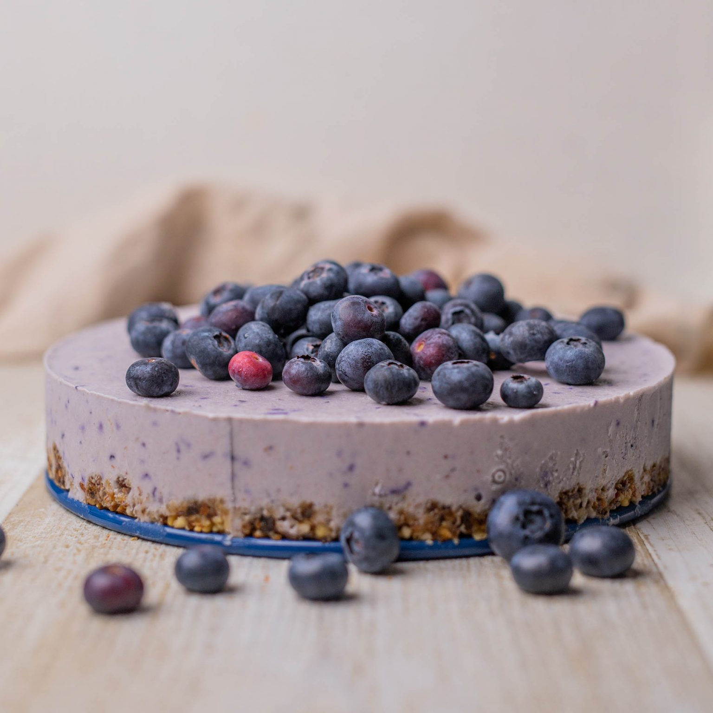

satisfy those cravings now!
Quick & Easy Blueberry Cheesecake
Where freshness meets creaminess. Enjoy a luscious, rich and sweet dessert at home. Here's how to make a light, airy cheesecake with a fruity delight.
yum yum yum yum yum yum yum
Ingredients
Base
- Crackers - 2 packets
- Butter - 200 g
Top Layer
- Milk - 1 cup
- Cream cheese - 70 g
- Vanilla Extract - 2 tsp
- Powdered Sugar - 1 cup
- Bluebeery pie filling / Fresh blueberries - 1 tbsp
Steps
- Crush graham crackers in a food processor or blender until you have a fine crumb.
- Pour melted butter into processor and pulse until incorporated with graham cracker crumbs.
- Press crumb mixture into the bottom and up the sides of a springform pan, making sure it’s firmly packed.
- Refrigerate crust while you prepare the rest of the cheesecake. This will chill the butter and help firm up the crust.
- Combine cream cheese, cream, powdered sugar and vanilla in a bowl.
- Beat with a mixer until completely creamy and the mixture is stiff.
- Pour cream cheese mixture into crust and spread until even.
- Refrigerate at least two hours.
- Top with blueberry pie filling.
Enjoy!